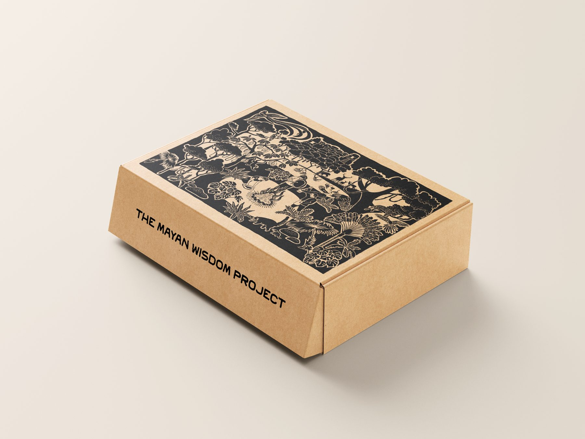
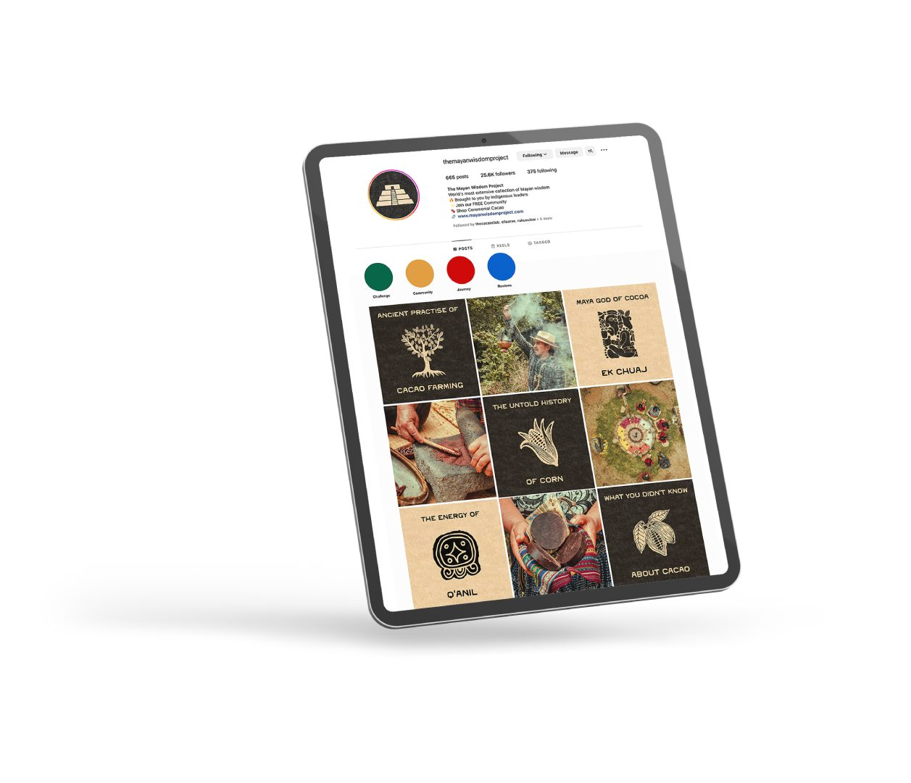
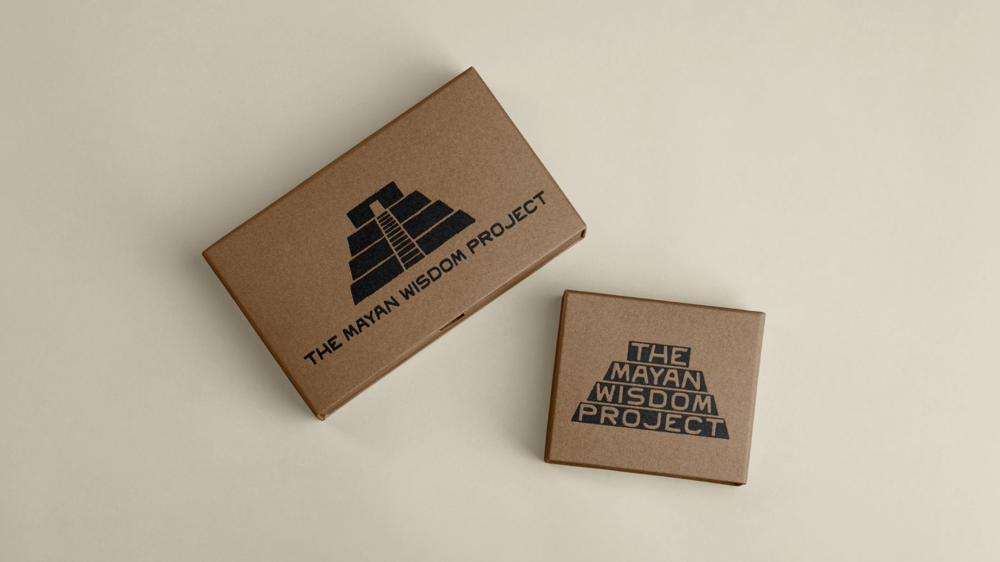
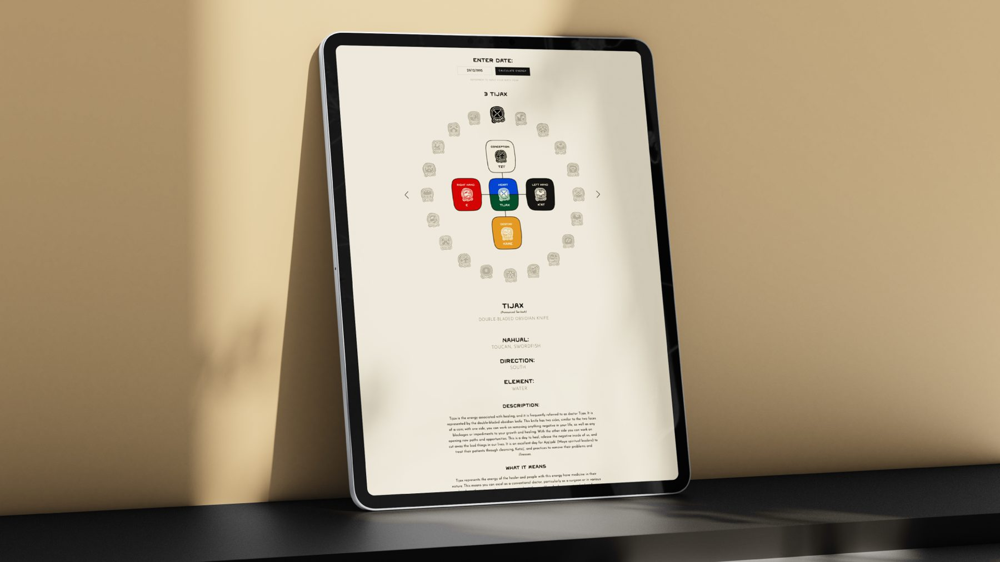
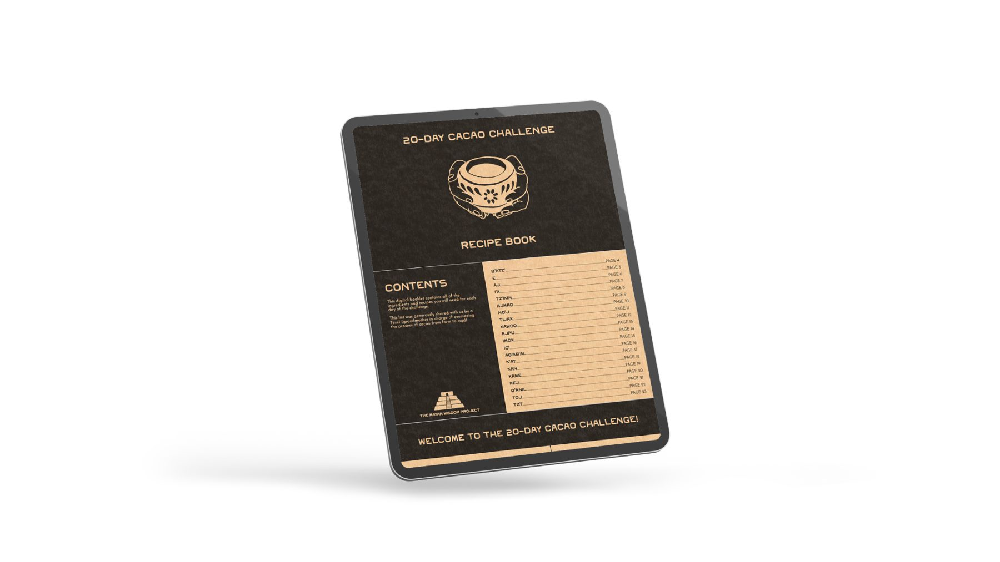
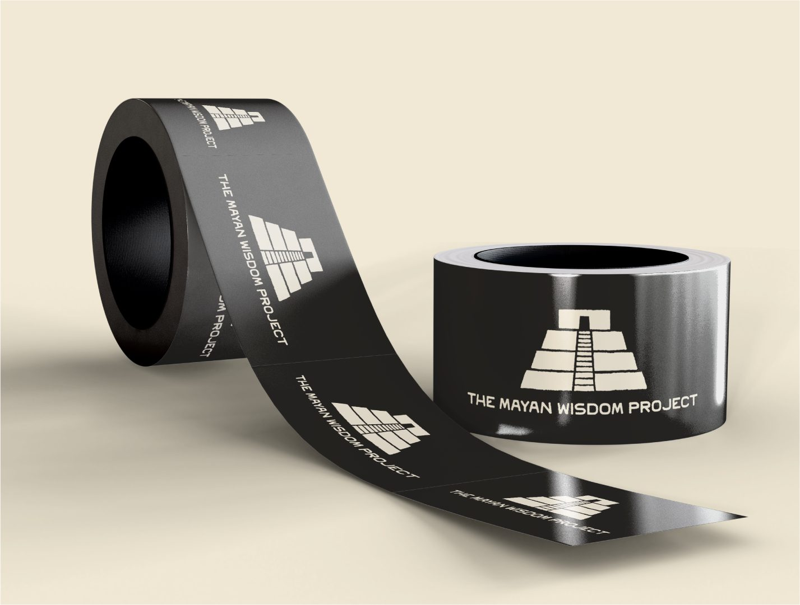
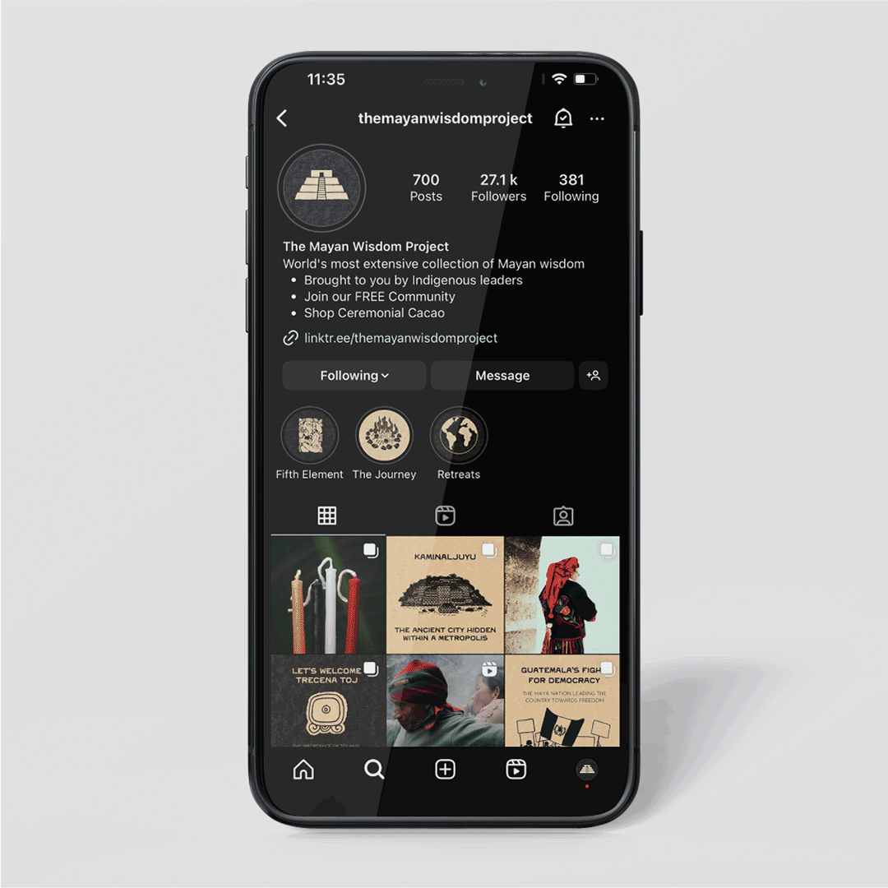
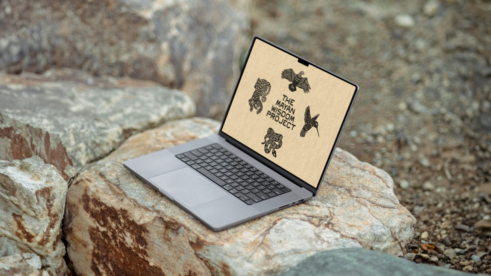
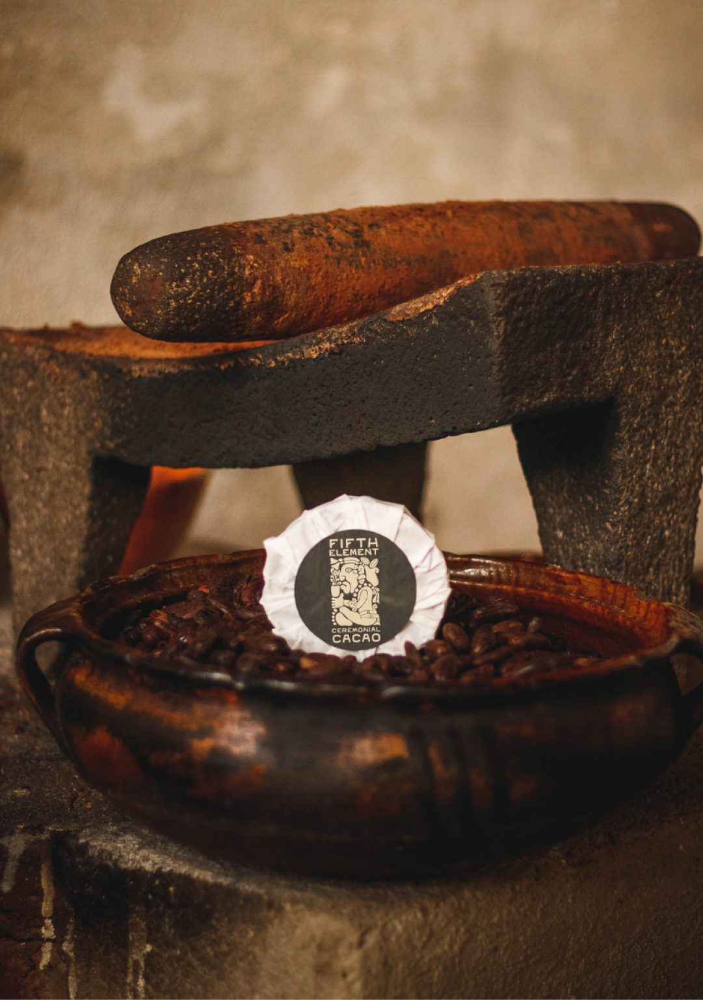

Rebrand, web, social, guidelines
The Mayan Wisdom Project
A full rebrand for an established niche business, without losing its loyal audience.
The Mayan Wisdom Project shares Mayan wisdom from Indigenous leaders, alongside ceremonial cacao, retreats and a free community. It already had a loyal following, so the rebrand had to modernise it without confusing the people who were already there.
Result
The client credits the work with a peak in social engagement and customer acquisition. When the new website launched in October 2023, people on the launch call and on Instagram praised it straight away, and long-time fans started asking about the paid course.
“It completely changed the trajectory of the business.”Sales and Marketing Manager, The Mayan Wisdom Project
“So many people commented and gushed about how beautiful the site is. It’s working!”Project Assistant, The Mayan Wisdom Project
What I did
- Audience research: mapped how customers interacted with the offer before designing anything
- Brand identity, packaging and shipping materials
- Instagram strategy and grid system
- Website
- A 20-Day Cacao Challenge recipe book
- Brand guidelines covering tone of voice and visuals








